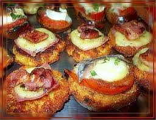

Toasts chauds et boulettes pizza
Ingredients
×
- 1 pâte à pizza
- 200 g de cheddar
- 40 g de beurre fondu
- 1 gousse d'ail
- 40 g de parmesan
- persil

Préparation
Étape 1
Découper des ronds dans 1 pâte à pizza. Placer un cube de 200 g de cheddar (20 cubes) au centre et fermer en boulette.
Étape 2
Mélanger 40 g de beurre fondu et 1 gousse d'ail écrasée. Mélanger 40 g de parmesan et persil haché. Tremper les boulettes dans le beurre à l’ail puis dans le parmesan.
Étape 3
Cuire à 180-200ºC pendant 10 à 15min.
Conseils
- Blinis façon croque-monsieur : emmental et jambon.
- Blinis mozzarella, sauce tomate, basilic, huile d’olive.